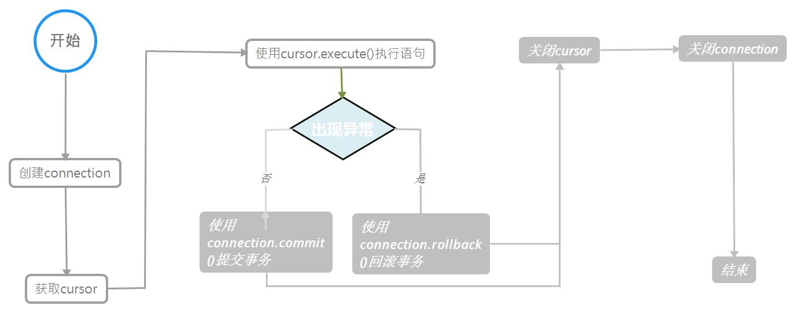

# 前言
在看《python 网络编程从入门到精通》，顺便做个笔记。
# 正文
本章以 MySQL 为例说明
python 操作数据库主要涉及 connection 和 cursor 两个对象，操作流程图如下：

# connection 对象
connection 对象，与数据源唯一的会话，可以使用 connection 对象的集合、方法、属性实现与数据的连接。
connection 参数列表
| 参数名 | 类型 | 说明 |
| host | 字符串 | 连接数据库服务器主机名，默认为本地主机 (localhost) |
| port | 数字 | MySQL 服务器端口号，默认是 3306 |
| user | 字符串 | 连接数据库的用户名 |
| password | 字符串 | 连接数据库的密码 |
| db | 字符串 | 数据库名称 |
| charset | 字符串 | 连接编码 |
connection 方法列表
| 方法名 | 说明 |
| cursor() | 使用该连接创建并返回游标 |
| commit() | 提交当前事务 |
| rollback() | 回滚当前事务 |
| close() | 关闭连接 |
# cursor 对象
cursor 对象是游标对象，用户可以用它查询和获取结果。
cursor 对象方法列表
| 方法名 | 说明 |
| execute | 执行一个数据库命令 |
| fecthone | 取结果集下一行 |
| fechmany(size) | 取结果集下几行 |
| fechall() | 取结果集中剩余的所有行 |
| rowcount | 最近一次 execute 返回数据的行数或影响行数 |
| close() | 关闭游标对象 |
# 一个例子
搬一个菜鸟教程里插入操作的例子。
#!/usr/bin/python | |
# -*- coding: UTF-8 -*- | |
import MySQLdb | |
# 打开数据库连接 | |
db = MySQLdb.connect("localhost", "testuser", "test123", "TESTDB", charset='utf8' ) | |
# 使用 cursor () 方法获取操作游标 | |
cursor = db.cursor() | |
# SQL 插入语句 | |
sql = "INSERT INTO EMPLOYEE(FIRST_NAME, \ | |
LAST_NAME, AGE, SEX, INCOME) \ | |
VALUES (%s, %s, %s, %s, %s )" % \ | |
('Mac', 'Mohan', 20, 'M', 2000) | |
try: | |
# 执行 sql 语句 | |
cursor.execute(sql) | |
# 提交到数据库执行 | |
db.commit() | |
except: | |
# 发生错误时回滚 | |
db.rollback() | |
# 关闭数据库连接 | |
db.close() |